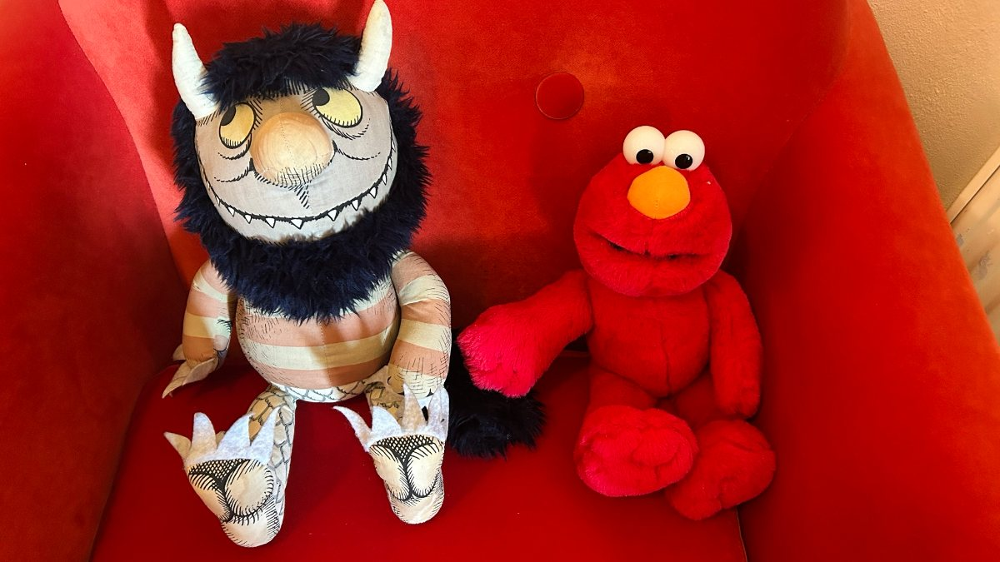
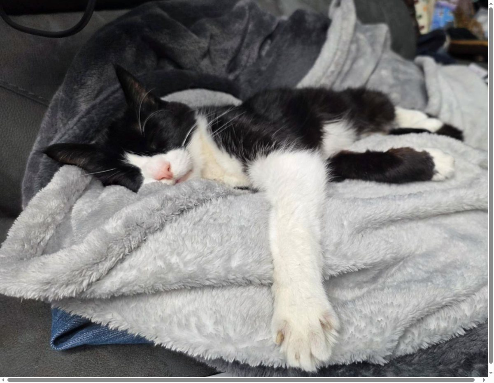

Your browser preference is set to
Light
Dark
so that's what you're seeing. Pick one below to override it.
but you've overridden it on this page. Reload to hand it back.
Why the switch isn't sticky
There's no light/dark mode toggle in the header, because there is no JS to remember it. A radio's state belongs to the document it is in, and the moment you follow a link the browser builds a fresh document with fresh defaults. CSS has no memory between pages, so a switch set to light on one page comes up dark again on the next. That is worse than no switch at all, so the rest of the site simply stays dark, which is the scheme the slides use.
Everything else about a light/dark mode switcher is CSS. The tokens carry both values in light-dark(), and the root reads the radios with :has(). Until either one is checked, a prefers-color-scheme media query makes the call instead, so there is no "auto" button to press: auto is simply what happens before you choose. The only thing missing is memory.
How to make it stick
Six lines of JavaScript are needed, and none of them touch styles. This saves the choice when it changes, and on every page it puts the saved radio back. The stylesheet never learns that a script exists; the :has() rule fires exactly as if you had clicked.
// on every page, right after the radios
const saved = localStorage.getItem('theme'); // "light" | "dark" | null (follow the browser)
if (saved) document.getElementById('theme-' + saved).checked = true;
document.querySelector('.theme').addEventListener('change', (e) => {
localStorage.setItem('theme', e.target.value);
});The usual worry with a stored theme is a flash of the wrong one before the script runs. This site already holds its first paint until the colophon has been parsed (the rel="expect" link in the head, there for the view transitions), so a script placed anywhere before that runs before anything is drawn. No flash, and no need to move it into the head.
In a React app
The idea carries over; the plumbing doesn't. React owns the inputs, so nothing goes looking for a radio: the choice lives in state, the radios render from it with checked, and onChange saves it to localStorage. The :has() rule can't tell React ticked the radio instead of you.
What doesn't carry over is the no-flash trick. A React app paints before its JavaScript has run, and a server-rendered one can't read localStorage at all, so the saved theme arrives late and the page blinks. The fix is a tiny plain script in the <head>, ahead of React, that marks the root before the first paint:
<!-- in the <head>, before the app's bundle -->
<script>
const saved = localStorage.getItem('theme');
if (saved) document.documentElement.dataset.theme = saved;
</script>
/* and each rule gains one selector */
:root:is([data-theme="light"], :has(#theme-light:checked)) { color-scheme: light; }Have the change handler update data-theme as well as storage, so the two never disagree, and read the initial state from that attribute in an effect, not from localStorage during render, or the server and the browser will draw different radios.
Example content
-
Lollycat -
Archie -
Fia -
Treacle -

Wild Thing & Elmo -

Buddha